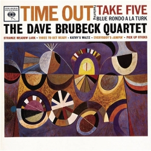

Disco1: Time Out
| Autor | Dave Brubeck Quartet |
| Publicación | 1959 |
| Género | West Coast jazz |
| Autor | Dave Brubeck Quartet |
| Publicación | 1959 |
| Género | West Coast jazz |
| Autor | Sonny Rollins |
| Publicación | 1956 |
| Género | Hard bop |
| Autor | Miles Davis |
| Publicación | 1959 |
| Género | Jazz modal y Jazz |